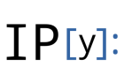
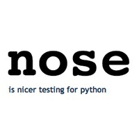
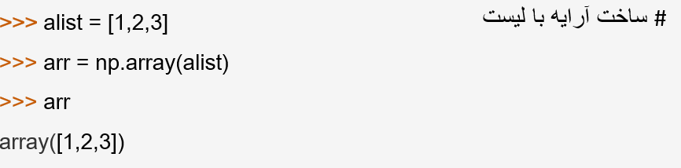
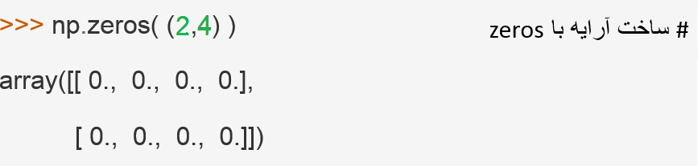
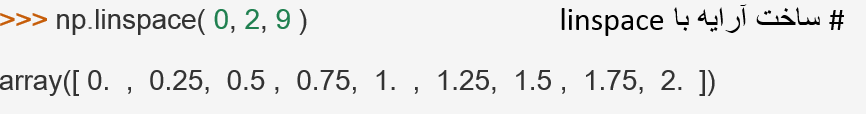
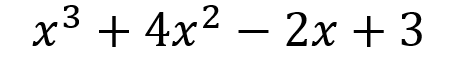

هسته SciPy:
- Python
- Numpy
- The scipy library
- Matplotib


- Pandas
- Sympy
- Ipython 
- Nose 


Numpy چیست؟
نامپای بسته اساسی برای محاسبات علمی با پایتون است که شامل :

ویژگیهای مهم ndarray
- ndarray.ndim
- ndarray.shape
- ndarray.size
- ndarray.dtype
- ndarray.itemsize
- ndarray.data





چندجمله ای ها
نامپای متدهایی برای کار روی چندجمله ای ها نیز فراهم کرده است.
میتواند ریشه های چند جمله ای را پیدا کند، مثلا داریم:
